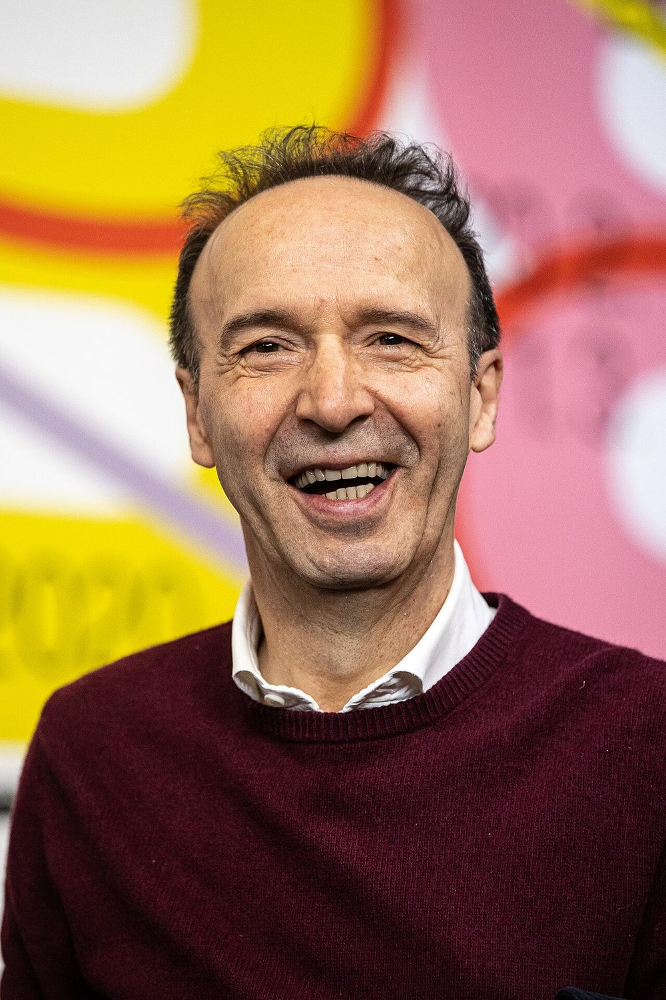
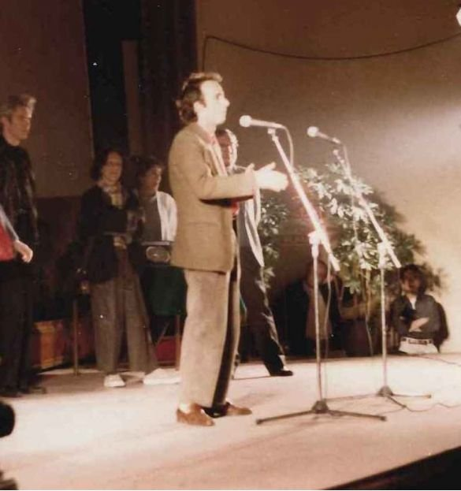
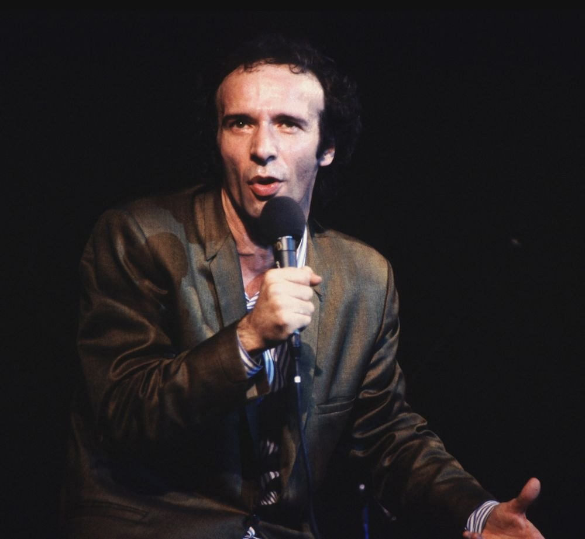
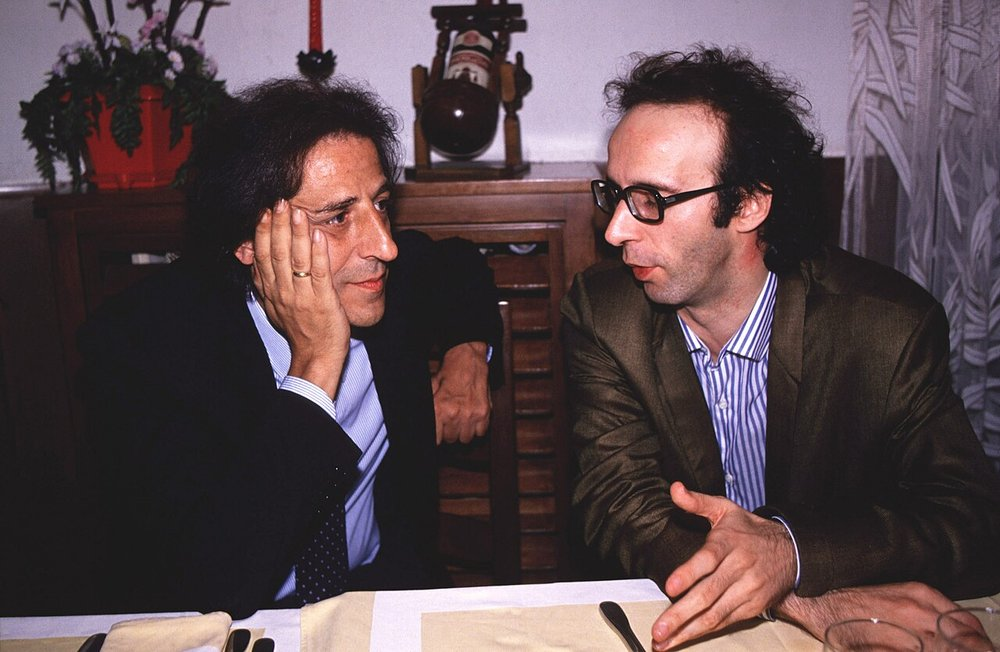
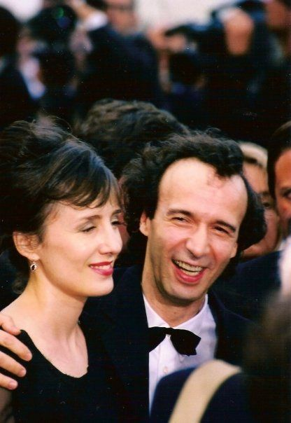
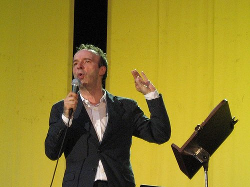

Roberto Benigni Biography: Age, Movies, Oscar, Net Worth and Family
He is the clown who made the world cry — and the only actor in history to win the Academy Award for Best Actor for a performance in a language other than English. Roberto Benigni grew up poor in a small Tuscan village, the son of a bricklayer and a fabric maker, and became Italy’s most beloved comedian. Then, with one film he wrote, directed and starred in — Life Is Beautiful (1997) — he did something nobody had done before: he told a story about the Holocaust as a comedy, won three Oscars for it, and climbed over the seats at the Academy Awards ceremony in sheer joy. He is the first Italian man on Stars of Europe, and the third Italian celebrity after Monica Bellucci and Sophia Loren — and his Oscar story is directly linked to Loren’s: she was the first performer ever to win an acting Oscar for a non-English-language performance, and he was the second.

Key takeaways
- Born 27 October 1952 in Manciano La Misericordia, Castiglion Fiorentino, Tuscany; age 74 as of November 2026. Son of a bricklayer and a fabric maker; grew up poor in a small Tuscan village.
- Wrote, directed and starred in Life Is Beautiful (1997), which won three Academy Awards at the 1999 ceremony — Best Actor, Best Foreign Language Film and Best Original Dramatic Score.
- He is the first, and still only, Best Actor winner for a non-English-language performance, and only the second performer after Sophia Loren to win an acting Oscar for a foreign-language film.
- Life Is Beautiful also won the Grand Prix at Cannes in 1998, more than 30 international awards, and became one of the highest-grossing non-English-language films in American box-office history.
- Married to actress Nicoletta Braschi since 1991; she has starred in most of the films he has directed, including Life Is Beautiful.
- Net worth is estimated at $10m–$15m. He does not enter the site’s Top 10 Richest list — his range sits below the current number 10.
Who Is Roberto Benigni?
| Full name | Roberto Remigio Benigni |
|---|---|
| Date of birth | 27 October 1952 |
| Age | 74 (as of November 2026) |
| Birthplace | Manciano La Misericordia, Castiglion Fiorentino, Tuscany, Italy |
| Nationality | Italian |
| Profession | Actor, comedian, screenwriter, film director |
| Years active | 1970–present |
| Education | École Philippe Gaulier (clown training) |
| Known for | Life Is Beautiful, Johnny Stecchino, The Monster, Down by Law, Pinocchio, The Tiger and the Snow |
| Spouse | Nicoletta Braschi (married 1991) |
| Net worth | $10m–$15m (estimated range) |
Roberto Benigni is Italy’s most famous clown — and one of the very few comedians in film history to be taken seriously as a great dramatic actor. In Italy he has been a household name since the 1970s, a wild, physical, endlessly talking performer whose comedy was compared to Charlie Chaplin’s. Outside Italy, most people know him for a single film: Life Is Beautiful (La vita è bella, 1997), the tragicomedy he wrote, directed and starred in, about a Jewish father who tells his little son that a Nazi concentration camp is an elaborate game, to protect the boy from the horror around him. Beyond film, he has also worked on stage and as a presenter of literary and cultural programmes — most famously TuttoDante, his one-man show explaining and performing Dante’s Divine Comedy.
That film made him the most talked-about man in world cinema in 1999. It won three Academy Awards, including Best Actor for Benigni himself — the first time the Oscar for Best Actor had ever gone to a performance in a language other than English, a record that still stands today. And the night he won it gave the Oscars one of its most famous moments ever: so overjoyed was he when Life Is Beautiful was announced as Best Foreign Language Film that he climbed over the backs of the seats in front of him, stood on them, and applauded the audience before making his way to the stage.
He is also the first Italian man on this site. Monica Bellucci and Sophia Loren opened the Italian section, and Benigni joins them as its third celebrity — and as a reminder that Italian cinema is not only its actresses. Like Pedro Almodóvar, he is an actor-director who writes his own films; like Antonio Banderas, Penélope Cruz and Javier Bardem, he is a European star who crossed over to Hollywood without leaving his own language behind.
Age and Early Life — A Poor Boy from Tuscany
Roberto Remigio Benigni was born on 27 October 1952 in Manciano La Misericordia, a tiny hamlet — a frazione — of Castiglion Fiorentino, in the province of Arezzo, Tuscany. His father, Luigi Benigni (1919–2004), was a bricklayer, carpenter and farmer; his mother, Isolina Papini (1919–2004), was a fabric maker. He grew up with three older sisters, Bruna, Albertina and Anna. The family was poor, and Benigni has often talked about a childhood with very little money but a great deal of talk, jokes and storytelling — the raw material of everything he would later do on stage and screen. He was raised Catholic and served as an altar boy as a child.
As a boy he briefly attended a Jesuit seminary in Florence, then left it behind. He worked for a time as a magician’s assistant, and his first work as a theatre actor came in 1971, in Prato. That autumn he moved to Rome, where he joined the city’s experimental theatre scene. His first big stage success came in 1975, with Cioni Mario di Gaspare fu Giulia, written by Giuseppe Bertolucci, and he studied clowning under Philippe Gaulier at the École Philippe Gaulier in France. It was there, in small theatres and cabarets, that he found his voice: a manic, fast-talking, deeply Tuscan comic style, full of wordplay, mime and exaggerated faces, in the tradition of the great Italian comic actors before him — and of his idol, Charlie Chaplin.
He became widely known in Italy through television, on Rai shows produced by Renzo Arbore. In Onda Libera (1976–77) a scatological comic song of his caused such a scandal that the series was suspended by the censors, and in L’altra domenica (1976–79) he played a lazy film critic who never watches the films he is asked to review. In 1979 Bernardo Bertolucci gave him a small, silent role as a window upholsterer in La Luna. His cheeky, rule-breaking style became part of his legend: in June 1983, at a public rally of the Italian Communist Party, he famously lifted and cradled the party’s leader, Enrico Berlinguer — an unthinkable gesture towards a politician of that era, when Italian politicians were proverbially serious and formal.


First Films — From Underground Theatre to Directing
Benigni made his acting debut in 1977 in Berlinguer, I Love You, a film he also wrote, directed by Giuseppe Bertolucci. It was a satirical, anarchic comedy, and it announced a new kind of Italian comic actor. More acting work followed, but Benigni wanted to direct his own films — and in 1983 he did. His directorial debut was Tu mi turbi (You Upset Me), an anthology of comic episodes about love, religion and everyday absurdity, which he wrote, directed and starred in.
Tu mi turbi was also the acting debut of the woman who would become the centre of his life and work: Nicoletta Braschi, a young actress from Cesena whom he had met in 1980. She would go on to star in most of the films he directed, and in 1991 she became his wife. From the very start, Benigni’s films were a family affair in the best sense — built around the same small circle of collaborators, above all Braschi, who played the grounded, independent woman to his impulsive, chaotic men.
The first great success came the next year. Nothing Left to Do But Cry (Non ci resta che piangere, 1984), which he co-directed with Massimo Troisi, was a huge hit in Italy: two modern men are thrown back in time to the Renaissance, and spend the film trying — and failing — to get home. It is still one of the best-loved Italian comedies ever made, and it established Benigni as a box-office star in his own country.


Italian Comedy Hits — Johnny Stecchino and The Monster
Through the late 1980s and early 1990s, Benigni directed and starred in a run of Italian comedy hits that made him the biggest comic star in Italy. The Little Devil (Il piccolo diavolo, 1988) cast him as a devil opposite the American star Walter Matthau, and was shot in both Italian and English. It was also the first film he co-wrote with Vincenzo Cerami, who would become his long-time writing partner. Johnny Stecchino (1991) — about a bus driver who looks exactly like a feared Sicilian mafioso and is mistaken for him — was one of the highest-grossing Italian films of all time. The Monster (Il mostro, 1994) played on the same trick: Benigni’s character is suspected of being a serial killer, purely because he behaves so strangely that everyone assumes the worst.
These films share a formula that Benigni made his own: an innocent, talkative, slightly mad ordinary man is dropped into a situation he does not understand, and his attempts to fix it make everything worse — until, somehow, his goodness wins out. The comedy is physical and verbal at once: the wild gestures, the stream of words, the face that can change expression three times in a second. It was a style that Italian audiences adored, and that critics compared, again and again, to Chaplin.
But by the mid-1990s Benigni wanted more than comedy. He had been thinking for years about a film that would use his clown’s tools — humour, innocence, imagination — on the darkest subject imaginable. In 1997 he made it.


Life Is Beautiful — The Film That Changed Everything
Life Is Beautiful (La vita è bella, 1997) is the film that defines Roberto Benigni. He co-wrote it with Vincenzo Cerami, directed it, and starred in it as Guido Orefice, a Jewish waiter in 1930s Tuscany who dreams of opening a bookshop. The film was shot in Arezzo, in the same Tuscan hills where Benigni grew up. The idea also came closer to home: his father Luigi had been held in the Bergen-Belsen camp during the Second World War and told his children about it in a humorous way, so as not to frighten them, and Benigni also drew on the story of Holocaust survivor Rubino Romeo Salmonì.
The first half is a romantic comedy. Guido courts Dora, a schoolteacher played by Nicoletta Braschi — she literally falls into his arms — wins her, marries her, and they have a son, Giosuè, played by the young Giorgio Cantarini. The second half is a different film entirely. It is 1944. Guido, his son and his uncle are taken to a Nazi concentration camp. Dora, who is not Jewish, insists on going with them. And Guido, to protect his little boy from the horror around him, tells him that the camp is not real: it is an elaborate game, with a thousand points to win and a real tank as the prize. Every cruelty of the camp is translated, in front of the boy, into a rule of the game.
It is one of the boldest ideas in the history of cinema — a comedy about the Holocaust — and it worked because Benigni never made light of the horror itself. The comedy is Guido’s invention, a father’s desperate act of love, and the film never lets the audience forget what is really happening: Guido is shot and killed in the final minutes, and the boy, who believes he has won the game, is reunited with his mother as an American tank rolls in. Some critics charged that the film made light of the Holocaust; Benigni’s answer was that it was a story about hope, and about what a father will do to protect his child.
The world agreed. The film won the Grand Prix at the Cannes Film Festival in 1998, more than 30 international awards in total, and became one of the highest-grossing non-English-language films in American box-office history, earning more than $230 million worldwide. It was nominated for seven Academy Awards, including Best Picture, Best Director and Best Original Screenplay. And at the ceremony in March 1999, it won three.
The Night He Climbed Over the Seats — The 1999 Oscars
The 71st Academy Awards, on 21 March 1999, gave the world its most famous Benigni moment — and one of the most famous moments in Oscar history. When Life Is Beautiful was announced as the winner of Best Foreign Language Film, Benigni did not walk to the stage. Giddy with delight, he climbed over the backs of the seats in front of him, stood on them, and applauded the audience, before making his way down to accept the award as the film’s director.
Later that evening he won again, this time for himself: the Academy Award for Best Actor. He is, to this day, the first and only actor to win Best Actor for a performance in a language other than English. And he was only the second performer ever to win an acting Oscar for a foreign-language film — the first was Sophia Loren, for Two Women in 1961. The film’s third Oscar that night went to Nicola Piovani, for Best Original Dramatic Score.
His acceptance speech for Best Actor is still quoted today. “This is a terrible mistake,” he said, “because I used up all my English!” He closed the speech by quoting the closing lines of Dante’s Divine Comedy — “the love that moves the sun and all the stars”. He thanked his parents, his wife, and the film’s young star, Giorgio Cantarini. It was the high point of his career, and it made him, for a brief moment, the most famous Italian in the world.
Hollywood and the World — Jarmusch, Fellini and Pinocchio
Benigni’s international career began long before Life Is Beautiful. His first English-language film was Down by Law (1986), written and directed by the American independent filmmaker Jim Jarmusch, in which Benigni played Roberto, a cheerful Italian drifter sharing a prison cell in Louisiana with two American losers. It was the start of a long friendship: he worked with Jarmusch twice more, in Night on Earth (1991), as a Roman cab driver whose confession gives his passenger, a priest, a heart attack, and in Coffee and Cigarettes (2003).
He also worked with the greatest of all Italian directors, Federico Fellini, in The Voice of the Moon (La voce della luna, 1990), Fellini’s last film. And Hollywood came calling in its own way: he played the son of Inspector Clouseau in Blake Edwards’s Son of the Pink Panther (1993) — a hit in Italy, but a flop in the United States — and a French villain, the scheming Roman governor Detritus, in Astérix & Obélix Take on Caesar (1999). In 2012 Woody Allen cast him in To Rome with Love, as a Roman everyman who suddenly becomes famous for no reason at all — a part written for Benigni’s particular gift for playing ordinary men in absurd situations.
And then there is Pinocchio — the story Benigni had wanted to film for years. In 2002 he directed and starred in his own version, playing the wooden puppet himself. It was a huge success in Italy and a flop everywhere else, and critics were unkind — it even won him a Razzie Award for Worst Actor. Seventeen years later he returned to the story in a very different way: in Matteo Garrone’s Pinocchio (2019) he played Geppetto, the old woodcarver who makes the puppet — a quieter, sadder, more moving performance, and one of the best of his later career, for which he was nominated for the David di Donatello for Best Supporting Actor. He had gone from playing the boy to playing the father, and the change suited him.


The Tiger and the Snow, TuttoDante and Later Work
Benigni has not directed a film since The Tiger and the Snow (La tigre e la neve, 2005), in which he played a poet and teacher in Rome who follows the woman he loves — played, as always, by Nicoletta Braschi — to Baghdad during the Iraq War. It was his last film as a director, and it divided critics. But he did not stop working. He turned, instead, to the stage — and to the greatest Italian poet of all.
In 2006 he premiered TuttoDante (“All About Dante”), a one-man show in which he reads, explains and performs passages from Dante Alighieri’s Divine Comedy — ebulliently, passionately, and in front of huge audiences. He is also a Tuscan improvisatory poet, able to recite and explain Dante from memory. It was a phenomenon in Italy: in 2006 and 2007 the show was performed 130 times in piazzas, arenas and stadiums for an estimated audience of about one million people, and a television special, Il V canto dell’Inferno (“The Fifth Canto of Hell”), broadcast by Rai 1 on 29 November 2007, was watched by more than 10 million viewers. He then took the show to the United States, Canada and Argentina in 2008–09. It was Benigni doing what he has always done best: taking something serious and making it alive, funny and human, without ever making it small.


On screen he has kept acting, and his later roles have been quieter and more reflective. In 2020 he starred alongside Sophia Loren in The Life Ahead, her return to film after a decade away — two Italian legends, both Oscar winners for non-English performances, sharing a film for the first time. He has since stayed close to the stage and to prime-time television specials rather than cinema: in March 2025 he presented Il Sogno, a live Rai 1 performance about Europe and the ideals that followed the Second World War, and in December 2025 he presented Pietro – Un uomo nel vento, a monologue about the life of Saint Peter filmed in the Vatican Gardens. The honours have followed him too: the Honorary Golden Bear at the Berlin Film Festival in 2020, and the Golden Lion for Lifetime Achievement at the Venice Film Festival in 2021. At 74, he remains one of the most recognisable faces in Italian culture — the clown from Tuscany who became, against all the odds, an Oscar winner.
Awards — Oscars, Cannes, BAFTA and Venice
Benigni’s awards list is led by the three Oscars for Life Is Beautiful, but it runs much longer than that. The film won the Grand Prix at Cannes in 1998, the BAFTA for Best Actor and the Screen Actors Guild Award for Best Actor in 1999, the European Film Award for Best Film and Best Actor in 1998, and the Golden Globe for Best Foreign Language Film. He was also nominated for the Oscar for Best Director and Best Original Screenplay for the film. In Italy he has won nine David di Donatello awards, the country’s top film honours, including Best Actor for The Little Devil in 1988 and Best Actor and Best Director for Life Is Beautiful, plus Nastro d’Argento (Silver Ribbon) wins for Down by Law and Johnny Stecchino, and an Honorary César in 2008.
For his career as a whole he has received the Honorary Golden Bear at the Berlin Film Festival (2020), the Golden Lion for Lifetime Achievement at the Venice Film Festival (2021), and the European Film Academy’s Achievement in World Cinema Award (2000). He is a Knight Grand Cross of the Order of Merit of the Italian Republic, one of Italy’s highest civilian honours, and holds honorary doctorates from universities including Bologna, Florence and Leuven, and — together with Nicoletta Braschi — the University of Toronto in 2015, followed by the University of Notre Dame in 2024. Few comedians in film history have been honoured quite like him.
Net Worth 2026
Roberto Benigni’s net worth is estimated at $10 million–$15 million. That is a range, not a single figure, and it is an estimate — because the sources disagree. One estimate puts his fortune at about $10 million, another at about $15 million. The money comes from nearly fifty years of work: his hit Italian comedies, the worldwide success of Life Is Beautiful, his acting roles in Italian and international films, and his hugely popular stage shows, above all TuttoDante.
That range keeps him off this site’s Top 10 Richest Celebrities page: its current number 10, Kıvanç Tatlıtuğ, is estimated at $15m–$25m, and Benigni’s range sits below it. See the Top 10 Richest page for the current ranking.
Personal Life
Benigni met Nicoletta Braschi in 1980, and they married on 26 December 1991. Braschi, an actress from Cesena, made her acting debut in his directorial debut, Tu mi turbi (1983), and has starred in most of the films he has directed since — including Life Is Beautiful, where she played Dora, Guido’s wife. It is one of the longest creative partnerships in Italian cinema: husband and wife, director and leading lady, for more than forty years. No children are recorded for the couple, and none are claimed here.
He still lives in Italy, and he still performs. His public life has stayed remarkably free of scandal: no divorces, no feuds, no tabloid drama — just the work, the stage, and the wife he has worked with since the beginning. His younger life in the poor Tuscan village, the seminary he left, the magician’s assistant job, the underground theatre — all of it is in the films if you look for it: the clown who grew up with nothing and learned, early, that laughter is a way of surviving.
Filmography Highlights
| Year | Title | Notes |
|---|---|---|
| 1977 | Berlinguer, I Love You | Acting debut; also wrote the film |
| 1979 | La Luna | Small silent role; Bernardo Bertolucci |
| 1983 | Tu mi turbi (You Upset Me) | Directorial debut; Braschi’s acting debut |
| 1984 | Nothing Left to Do But Cry | With Massimo Troisi; huge Italian hit |
| 1986 | Down by Law | First English-language film; Jim Jarmusch |
| 1988 | The Little Devil | Director and star; with Walter Matthau |
| 1990 | The Voice of the Moon | Federico Fellini’s last film |
| 1991 | Johnny Stecchino | Director and star; one of Italy’s biggest hits |
| 1991 | Night on Earth | Jim Jarmusch; Roman cab driver |
| 1993 | Son of the Pink Panther | Blake Edwards; son of Inspector Clouseau |
| 1994 | The Monster | Director and star |
| 1997 | Life Is Beautiful | Wrote, directed, starred; 3 Oscars |
| 1999 | Astérix & Obélix Take on Caesar | As Detritus |
| 2002 | Pinocchio | Director and star, as Pinocchio |
| 2003 | Coffee and Cigarettes | Jim Jarmusch |
| 2005 | The Tiger and the Snow | Director and star; last film as director |
| 2012 | To Rome with Love | Woody Allen |
| 2019 | Pinocchio | As Geppetto; Matteo Garrone |
| 2020 | The Life Ahead | With Sophia Loren |
FAQs
How old is Roberto Benigni?
Roberto Benigni was born on 27 October 1952 in Manciano La Misericordia, Castiglion Fiorentino, Tuscany, Italy. He is 74 years old as of November 2026.
How many Oscars has Roberto Benigni won?
Two, both for Life Is Beautiful at the 1999 ceremony: Best Actor and Best Foreign Language Film (accepted as the film’s director). The film also won Best Original Dramatic Score for Nicola Piovani, making three Oscars in total. Benigni is the first, and still only, actor to win Best Actor for a non-English-language performance.
What is Life Is Beautiful about?
Life Is Beautiful (1997, La vita è bella) tells the story of Guido Orefice, a Jewish father in 1940s Italy who tells his young son that the Nazi concentration camp they are imprisoned in is an elaborate game, to protect the boy from the horror around him. Benigni wrote, directed and starred in the film; his wife Nicoletta Braschi played Dora, Guido’s wife. It was filmed in Arezzo, Tuscany.
Why did Roberto Benigni climb over the seats at the Oscars?
When Life Is Beautiful was announced as the winner of Best Foreign Language Film at the 71st Academy Awards on 21 March 1999, Benigni was so overjoyed that he climbed over the backs of the seats in front of him, stood on them and applauded the audience, before going to the stage. Later that night he won Best Actor, and said in his speech: “This is a terrible mistake because I used up all my English!”
Who is Roberto Benigni’s wife?
Actress Nicoletta Braschi. They met in 1980 and married on 26 December 1991. Braschi made her acting debut in Benigni’s directorial debut, Tu mi turbi (1983), and has starred in most of his films, including Life Is Beautiful as Dora. They have no children recorded.
What is Roberto Benigni’s net worth?
His net worth is estimated at $10 million–$15 million. Sources disagree — one estimate says about $10 million, another about $15 million — so a range is given, not a single figure. He does not appear on this site’s Top 10 Richest Celebrities page, because his range sits below the current number 10.
Did Roberto Benigni play Pinocchio twice?
In a way, yes — but two different characters. In his own film Pinocchio (2002) he played the wooden puppet himself. Seventeen years later, in Matteo Garrone’s Pinocchio (2019), he played Geppetto, the woodcarver who makes the puppet.
What is TuttoDante?
TuttoDante (“All About Dante”) is Benigni’s one-man stage show, premiered in 2006, in which he reads, explains and performs passages from Dante Alighieri’s Divine Comedy from memory. In 2006–07 it was performed 130 times in Italy for about one million people, and a television special, Il V canto dell’Inferno, was watched by more than 10 million viewers. He later took the show to the United States, Canada and Argentina in 2008–09.
Sources
Facts in this article were checked against: Wikipedia — Roberto Benigni (born 27 October 1952 Manciano La Misericordia, Castiglion Fiorentino, Tuscany; full name Roberto Remigio Benigni; parents Luigi Benigni, bricklayer, carpenter and farmer, and Isolina Papini, fabric maker; first and only Best Actor Oscar for a non-English-language performance; second performer after Sophia Loren to win an acting Oscar for a foreign-language film; acting debut 1977 Berlinguer, I Love You; directorial debut 1983 Tu mi turbi; Nothing Left to Do But Cry 1984, The Little Devil 1988, Johnny Stecchino 1991, The Monster 1994, Pinocchio 2002, The Tiger and the Snow 2005; Down by Law 1986, Night on Earth 1991, Coffee and Cigarettes 2003; The Voice of the Moon 1990; Son of the Pink Panther 1993; To Rome with Love 2012; Pinocchio 2019 as Geppetto; met Braschi 1980, married 26 December 1991; Honorary Golden Bear 2020; years active 1970–present; three older sisters Bruna, Albertina and Anna, raised Catholic and altar boy; first theatre 1971 Prato, moved to Rome autumn 1971, first stage success 1975 Cioni Mario di Gaspare fu Giulia, clown training under Philippe Gaulier; Onda Libera suspended by censors, L’altra domenica lazy film critic, La Luna 1979 small silent role, lifted Enrico Berlinguer June 1983; father held at Bergen-Belsen and Life Is Beautiful partly based on his experiences and on Rubino Romeo Salmonì; Oscar speech closed quoting Dante; Pinocchio 2002 Razzie Worst Actor; TuttoDante 130 shows 2006–07, about one million spectators, TV special over 10 million viewers, tour US/Canada/Argentina 2008–09; David di Donatello Best Actor 1988 and 1998, Nastro d’Argento Best Actor Down by Law and Johnny Stecchino, Honorary César 2008, David di Donatello Best Supporting Actor nomination for Pinocchio 2019, honorary degrees Toronto 2015 and Notre Dame 2024); Hassan’s sources — roberto-benigni-hassan-source.md (first source, received 22 November 2026, truncated mid-sentence in Early Life; its points were mostly already in the draft in more precise form, and its stage/literary-programme point was added) and roberto-benigni-hassan-source-2.md (complete second source, received 22 November 2026; combined in full, rephrased in own words, each strong point checked against Wikipedia/Britannica and other named sources above). Net worth range $10m–$15m from third-party estimates that disagree (TrendingCelebs about $10m; Celebrity Net Worth about $15m). All writing is original to Stars of Europe. Deliberately left out: claims from thin celebrity blogs, and the disputed “third overall acting Oscar for a non-English role” count, which does not match the verified record; the first source’s height of about 1.68 m (Wikipedia and Britannica list no height, and other sites disagree between about 1.68 m and 1.72 m); the second source’s claim that Geppetto won the David di Donatello for Best Supporting Actor (the 65th David di Donatello winners list shows Luigi Lo Cascio won for The Traitor and Benigni was nominated, so the article says nominated only); the Bergen-Belsen duration (sources disagree between two and three years, so no duration is given); the second source’s singer-songwriter/album and 2005 news-protest points, which add little to the biography; and any newer film projects after 2019, which are not in the Wikipedia filmography — only the reported 2025 television specials are mentioned in prose. Photographs added 22 November 2026: the 1985 Salsomaggiore stage photograph (public domain, Biblioteca Comunale G.D. Romagnosi, Salsomaggiore Terme); the 1990 stage portrait and the 1990 photograph with Giorgio Gaber (both Gorup de Besanez, CC BY-SA 4.0); and the 2008 TuttoDante photograph from Padua (Silviapitt, CC BY-SA 3.0) — each visually checked against the person named. A 1985 photograph of Benigni with Jim Jarmusch at Salsomaggiore (File:Salso Film & tv Festival 6.jpg, public domain) exists on Commons but could not be downloaded because Wikimedia rate-limited the requests, so it is not used yet. The 2021 Venice Golden Lion photograph (File:78a mostra del Cinema di Venezia 04.jpg) was checked and not used because Benigni is not recognisably visible in the wide red-carpet shot.